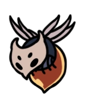
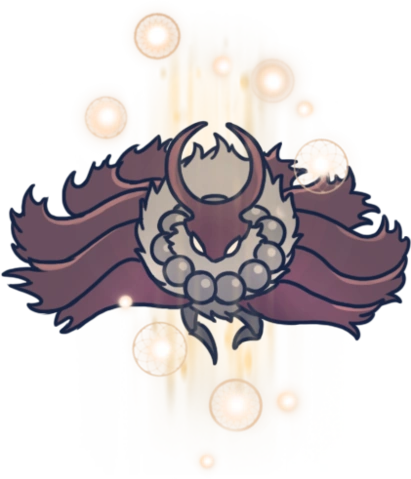

Frontières du Royaume
Une région se situant le plus à l’est de Hallownest, à côté de la Cité Des Larmes. Ses falaises sont envahies par une chute constante de cendres blanches.
Carte
Lore
Les Frontières Du Royaume est la région où le Roi Pâle est arrivé sous la forme d'un grand Wyrm avant la fondation du royaume. Il a perdu sa carapace dans la partie est des Frontières Du Royaume et s'est transformé en sa plus petite forme. Son cadavre en décomposition est à l'origine des cendres qui tombe sur les Frontières Du Royaume, qui est en fait une mue.
Une fois le royaume établi et la Cité Des Larmes construite, les habitants de la ville semblaient hésiter à construire plus loin dans les Frontières Du Royaume, apparemment tenus à distance par quelque chose. À un moment donné, le Colisée Des Fous a été construit dans le cadavre sculpté d'une ancienne bestiole morte sur l'une des falaises. Il attirait des guerriers de tous les coins pour s'affronter dans l'arène du Colisée.
Connexions
Les Frontières du Royaume sont reliées à ces zones :
Ennemis
-
Belfly

Une créature possédant de fines ailes qui dissimulent un ventre très instable. Elles sonneront leur propre vie pour protéger leur territoire. Une créature coléreuse sans égard pour sa propre vie. Une créature qui ne connait pas la peur... peut-on vraiment l'appeler "proie" ?
-
Mouche Boursouflée
Une grande créature docile. Bourdonne paisiblement dans les cavernes qui se situent aux frontières du royaume. Ces créatures sont beaucoup trop lentes pour pouvoir vous échapper et beaucoup trop grandes pour pouvoir se cacher. Cette proie ne sera en aucun cas un défi pour vous, mais parfois c'est agréable d'éviter d'avoir à faire des efforts.
-
Grand Sautilleur
Une créature qui vit au bout du monde. Attaque en sautant sur ses proies pour les écraser sous son corps. Une adversaire digne de ce nom, étonnamment agile pour sa taille. Vous pouvez soit garder vos distances, soit essayer d'attaquer ses pattes quand elle saute.
-
Ruchelins

La plus petite créature de la ruche. Effectue uniquement des tâches simples. Faibles, mais nombreuses et qui travaillent très dur. Leurs petits corps velus sont remplis d’un liquide épais, doux et doré. C’est toujours une bonne idée d’avoir un peu de ce liquide sur vous, lorsque vous partez pour de longues chasses.
-
Sautilleur
Une créature qui saute sur ses proies. Utilise son appendice allongé et pointu pour aspirer les fluides vitaux. Le ventre de ce voleur est rempli du sang qu'il a aspiré du corps d'autres bêtes. Si vous le maintenez au-dessus d'un feu, son ventre va s'accroître jusqu'à ce qu'il explose en un geyser de fluides.
-
Aspid Sauvage
Forme ancestrale et plus sauvage des Aspids. Autrefois considérées comme une espèce disparut, elles ont réapparu aux frontières du royaume. Ces adversaires cruels vous embusqueront et vous attaqueront sans relâche avec leur venin brûlant. C'est étonnant que leur descendance soit si faible. Si je décide un jour de faire des enfants, j'espère qu'ils seront plus fort que moi...
-
Grimm Despote

Esprit puissant et dévoué de la Troupe de Grimm. Dans le cadre du Rituel, il rassemble des flammes écarlates avec sa torche. Il abandonnera la flamme une fois vaincu. Une étincelle de lumière rouge d'un rêve le plus sombre. Des cauchemars écarlates brillants et sauvages. Les visions danse et les femmes parlent. Brûlez le père, nourrissez l'enfant
Boss de la Zone
Hornet Sentinelle
Hornet Sentinelle est la deuxième forme de Hornet. Elle défie le Chevalier à l'entrée de la Carapace Abandonnée aux Frontières Du Royaume pour tester sa détermination et sa force à vouloir sauver Hallownest. Elle déploie cette fois ci toute sa force et ses outils.
Markoth
Markoth est l'un des Guerrier des Rêves. Il faisait partis de la Tribu des Papillons de Nuit et était l'un des seuls à porter une arme, avec Chardon-de-vent. Il se rendit aux Frontières du Royaume pour s'isoler et méditer, dans l'espoir de découvrir "une vérité oubliée depuis longtemps". Markoth combattit tous ceux qui le menaçaient, quelles que soient leurs raisons. Il finit par mourir, sa dépouille n'ayant jamais été retrouvée, dans une grotte isolée des Frontières du Royaume.
Évènements
- Obtention de la Marque du roi
- Accès au Colisée des Fous
- Accès à la Carapace Abandonnée
- Rencontre du Maître d’Aiguillon : Oro
- Rencontre de Hornet
- Rencontre de Bardoon
- Rencontre de Monsieur Champignon #2